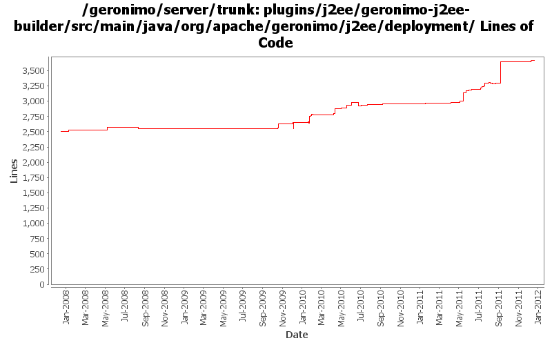

[root]/plugins/j2ee/geronimo-j2ee-builder/src/main/java/org/apache/geronimo/j2ee/deployment
 annotation
(8 files, 2337 lines)
annotation
(8 files, 2337 lines)
 util
(0 files, 0 lines)
util
(0 files, 0 lines)

| Author | Changes | Lines of Code | Lines per Change |
|---|---|---|---|
| Totals | 190 (100.0%) | 2528 (100.0%) | 13.3 |
| djencks | 91 (47.9%) | 924 (36.6%) | 10.1 |
| gawor | 38 (20.0%) | 638 (25.2%) | 16.7 |
| xuhaihong | 24 (12.6%) | 588 (23.3%) | 24.5 |
| genspring | 18 (9.5%) | 233 (9.2%) | 12.9 |
| shivahr | 2 (1.1%) | 48 (1.9%) | 24.0 |
| dblevins | 1 (0.5%) | 38 (1.5%) | 38.0 |
| xiaming | 2 (1.1%) | 25 (1.0%) | 12.5 |
| michaelfang | 2 (1.1%) | 18 (0.7%) | 9.0 |
| vamsic007 | 1 (0.5%) | 11 (0.4%) | 11.0 |
| jdillon | 2 (1.1%) | 4 (0.2%) | 2.0 |
| rickmcguire | 7 (3.7%) | 1 (0.0%) | 0.1 |
| gdamour | 2 (1.1%) | 0 (0.0%) | 0.0 |
GERONIMO-6240 Fix build up to system-database. Builder not found for it
2 lines of code changed in 1 file:
GERONIMO-6230 Ensure the temp jar file exists before new NestedJarFile to avoid FileNotFoundException
6 lines of code changed in 1 file:
GERONIMO-6225 Ensure URI is valid before resolving a path string. And add logger to Module.java to log URI related exceptions as warnings
19 lines of code changed in 1 file:
Miss a file in the last commit
344 lines of code changed in 1 file:
GERONIMO-6143 Create a fragment context for each sub modules in the EAR package
1 lines of code changed in 1 file:
GERONIMO-6118 Add 'close' action to each catch block for better error handling
17 lines of code changed in 1 file:
GERONIMO-6118 Close the earContext to remove the temporary bundle and other resources
1 lines of code changed in 1 file:
GERONIMO-6106 Clean up temp files created in the deployment process
Use a thread local in the FileUtils to hold all the temp files in the deployment process
0 lines of code changed in 1 file:
Only ear package will be extracted to temp files
1 lines of code changed in 1 file:
GERONIMO-6106 Clean up temp files created in the deployment process
a. Start the reaper thread on the server start up, it will clean up the temp files generated by FileUtils in the last run
b. Keep a temp file list in the DeploymentContext, and will be deleted after the deployment finished
21 lines of code changed in 1 file:
GERONIMO-6106 Clean up temp files created in the deployment process
11 lines of code changed in 1 file:
the openejb side JndiConsumer api changed again.
0 lines of code changed in 1 file:
Openejb added a method for interface JndiConsumer.
11 lines of code changed in 1 file:
GERONIMO-6089: Support for CDI beans in ear lib directory
38 lines of code changed in 1 file:
GERONIMO-6043 module init order doesn't always work due to gbean dependencies
14 lines of code changed in 2 files:
GERONIMO-5050 really use only one owb context for the whole ear, and combine all the module info into it
9 lines of code changed in 1 file:
GERONIMO-6043 gbean reordering so initorder can work
25 lines of code changed in 2 files:
Update the comparing logic a bit, the non client modules are left unchanged
9 lines of code changed in 1 file:
If init module order is set with true, just move the application client to the last position
33 lines of code changed in 2 files:
GERONIMO-6016 Geronimo can't handle well when modules in ear has the same name.
7 lines of code changed in 1 file:
had thought that the default value of initializeInOrder in specDD is false instead of null.
1 lines of code changed in 1 file:
the module sequence should be the same order in DD if <initialize-in-order> is set to true in application.xml.
9 lines of code changed in 1 file:
1, Copy the non module files before caculating manefest classpath because we need to support direcory classpath.
2, Add manifest classpath caculation logic for lib/*.jar .
18 lines of code changed in 1 file:
GERONIMO-5989 CDI EAR deployment issue
name can't identify a module well in 3.0. return moduleURI.hashCode() in hashCode() method to fix this.
1 lines of code changed in 1 file:
correct the priority setting place for WebModule.
1 lines of code changed in 1 file:
EAR/lib/sub-dir/*.jar should not be added into lib classpath.
2 lines of code changed in 1 file:
GERONIMO-5968 To support module priority so that we could control the sub-modules handling sequence during the deployment process.
A, add priority for modules.
1, ConnectorModule
2, EjbModule
3, WebModule
4, AppClientModule
B, Sort modules before the building.
33 lines of code changed in 6 files:
to avoid NPE when building plugin with ext-module tag in DD.
138 lines of code changed in 2 files:
GERONIMO-5938 Load JSF taglib xml files from bundles
35 lines of code changed in 1 file:
GERONIMO-5765: Improve the error message slightly
1 lines of code changed in 1 file:
GERONIMO-5765: Display a warning message when web application is deployed with WAB manifest
8 lines of code changed in 1 file:
Fix forked mode wsgen and webservice annotation scanning, might need refract later
2 lines of code changed in 1 file:
need to install BV Gbean for EAR because PU in EAR/lib/*.jars are using it.
12 lines of code changed in 1 file:
GERONIMO-5050 OWB integration set up injection of ee resources with naming builders. Also provide a more likely classloader for proxies
10 lines of code changed in 1 file:
some cleanup on the axis plugin to get it compile cleanly
0 lines of code changed in 2 files:
GERONIMO-5567 rewrite jetty integration to use a openejb-like info tree and the *Registration interfaces. This gets everything started in the right order and is a lot simpler. Old code still needs to be removed
1 lines of code changed in 1 file:
regression - make sure app jndi namespace is properly shared for standalone modules
21 lines of code changed in 2 files:
GERONIMO-5025 include the app and global contexts in the app client jndi tree. This causes big problems if one of these is a resource-ref or similarly references something only configured on the server
4 lines of code changed in 1 file:
GERONIMO-5423 make lib/ persistence units in an ear global
3 lines of code changed in 1 file:
GERONIMO-5408. Attach classpaths to modules, and combine them into the DeploymentContext bundle-classpath
32 lines of code changed in 5 files:
(44 more)